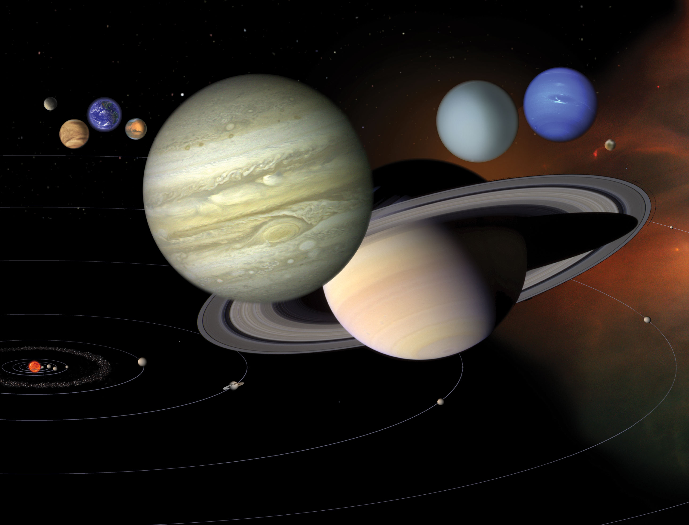

Image Source: NASA

Image Source: NASA
This site introduces the Solar System to those who may not be well-informed of it. On this website, you will find multiple descriptive pages including those on the Sun, inner planets, major moons and dwarf planets, as well as documentation on multiple space excursions.
The Solar System is a huge place filled with planets, moons, the Sun, and many other objects in space. Each planet is unique, each has its own size, weather, surface, and features. From hot, rocky planets near the Sun to the cold, distant planets, there is a lot to discover.